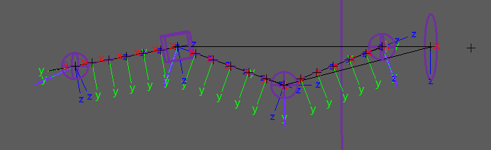
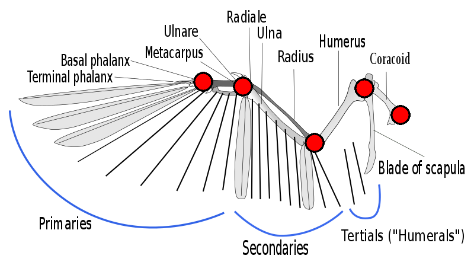

Creates a cartoon wing body part, which is anatomically similar to an arm but with
feathers.
Guides:


(image by L. Shyamal Shyamal)
- 'Base Guide', 'Root Guide', 'Mid Guide', 'Tip
Guide', and 'Metacarpal Guide' - Placed them as
shown above.
- 'Scapula Feather Guides' - Also called 'Tertials' feathers, these
represent the feathers between the 'Base Guide' and the 'Root Guide'. The attribute
'Scapula Feathers' can be used to increase their count. keep them between 'Root Guide'
and 'Mid Guide' in order.
- 'Secondary Feathers' - The attribute 'Secondary
Feathers' can be used to increase their count. keep them between 'Mid Guide' and
'Tip Guide' in order.
- 'Primary Feathers' - The attribute
'Primary Feathers' can be used to increase their count. keep them between 'Tip Guide'
and 'Metacarpal Guide' in order
- 'Feather Aim # Guides' - Rotation of
aim ctrls which animates feather spread.
Attributes:
- 'Ctrls Scale' - Scale all the node ctrls. Note
that the attachments 'Ctrls
Settings' and 'CtrlsShape' will
override this. [Video]
- 'Clean Transformations' - If checked,
the zeroed pose will be
the same as the bind pose; if unchecked, when zeroing
the ctrls, they will align with a world axis specified in the following two
attributes. [Video]
- 'World Orientation' - The world axis the ctrls
will align with when zeroed. Usually, this attribute's default value is the correct
value. [Video]
- 'World Orient Twist' - Along with 'World
Orientation', defines the ctrls zeroed pose. Usually, the default value of 0 is the correct
value. [Video]
- 'Expose RotateOrder' - Exposes all the ctrls
'RotateOrder' attribute in the Channel Box. [Video]
- 'Secondary Ctrls' - Secondary ctrls are added
under some ctrls to help prevent gimbal lock.
A visibility attribute is added to the parent
ctrl. [Video]
- 'Scapula Feathers' - Number of feathers to create along the
Scapula/Tertials, when changed, a 're-template' is required.
- 'Secondary Feathers' - Number of feathers to create along the
Secondaries; when changed, a 're-template' is required.
- 'Primary Feathers' - Number of feathers to create along Primary/palm;
when changed, a 're-template' is required.
- 'Auto Orient' - Adds 'Auto Orient' attribute to
'feather_aim_b_ctrl'.
- 'Ik Fk Switch' - Select where the 'Ik Fk
Switch' attribute and other shared attributes are placed: [Video]
- 'Switch Ctrl Offset' - Position offset of
'switch_ctrl' from the 'tip_jnt'.
- 'Volume' - Adds 'Auto Volume' and 'Manual
Volume' attributes.
- 'Pin Ctrl' - Add a 'pin_ctrl'
that constrains 'mid_ctrl' when activated. To activate this ctrl use the 'Pin' attribute on 'mid_ctrl'.
Use a 'SpaceSwitch' attachment on 'pin_ctrl' to
properly use this feature.
- 'Mirror Behaviour' - Only
affects mirrored nodes.
- Unchecked - The IK ctrls of mirrored nodes will align with the
world, meaning that both wings will move and rotate in the same direction (default for
legs).
- Checked - The IK ctrls of mirrored nodes will mirror orientations,
meaning that both wings will reflect each other (default for arms).
- 'IK Twist' - The attribute
'Twist' is added to 'ik_tip_ctrl', giving you another control over the
IK chain twist.
- 'Stretch' - The attributes
'Auto Stretch' and 'Manual Stretch' are added to 'ik_tip_ctrl'
for control over the wing length.
- 'Toggle Pole Vector' - The attribute
'Toggle Pole Vector' is added to 'ik_tip_ctrl', which can turn off the pole vector
constraint.
- 'Soft IK' - The attribute
'Soft Ik' is added to 'ik_tip_ctrl', which helps fix the 'pop' in the animation when
the IK chain gets fully extended.
- 'Ctrls Translate' - If checked, animators will also be
able to translate the FK ctrls.
- 'Ribbon Joints' - How many skinning
joints each ribbon will have (total x2; upper ribbon and lower ribbon). [Video]
- 'Ribbon Twist' - Allows the ribbon joints to twist. Turn
this off for creatures with external skeletons, such as spiders, or for characters wearing rigid
armor.
- 'Ribbon Micro Ctrls' - Add a ctrl for
every ribbon skinning joint. [Video]
- 'Bezier Ctrls' - Adds ctrls that
deform the ribbon like a Bezier curve. [Video]
- 'Bezier Ctrls Offset' - Position offset of the Bezier ctrls from the
joint chain.
Connections:
- 'Root Input' - Drives the ctrls of this node except for the
'ik_tip_ctrl' and the 'ik_pv_ctrl'.
- 'IK Tip Input' - Drives the 'ik_tip_ctrl' and the
'ik_pv_ctrl'. Separate from 'Root Input' because we often want the IK ctrls to move with the 'Base' node.
- 'Root Output' - An output at the 'root_jnt'
(shoulder).
- 'Tip Output' - An output at the 'tip_jnt'
(Ulnare).
_____________________________________________
Get Arise at: https://www.ariserigging.com